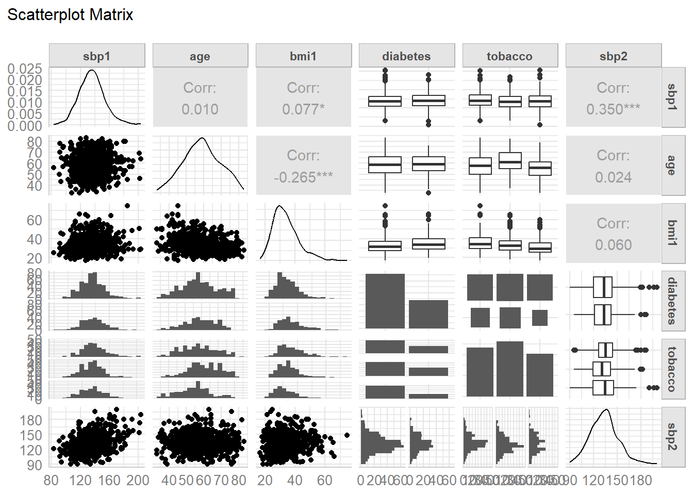
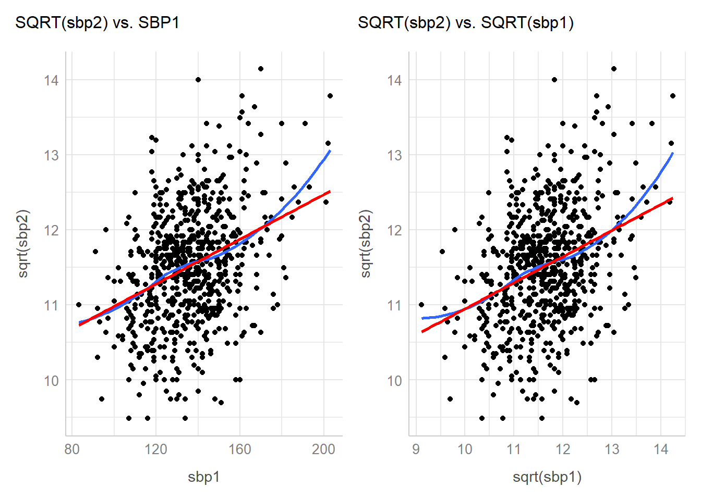

library(broom)
library(car)
library(GGally)
library(Hmisc)
library(janitor)
library(knitr)
library(mosaic)
library(naniar)
library(patchwork)
library(sessioninfo)
library(simputation)
library(tidyverse)
## Global options
opts_chunk$set(comment=NA)
theme_set(theme_bw())
options(dplyr.summarise.inform = FALSE)431 Project B Sample Study 2 Report
Important Reminders from Dr. Love
Remember that each subsection should include at least one complete sentence explaining what you are doing, specifying the variables you are using and how you are using them, and then conclude with at least one complete sentence of discussion of the key conclusions you draw from the current step, and a discussion of any limitations you can describe that apply to the results.
If you want to download the Quarto code I used to create this document, click on the Code button near the title of this Sample Study.
For heaven’s sake, DO NOT use my words included in this example report in your project. Rewrite everything to make it relevant to your situation. Do not repeat my instructions back to me.
1 Setup and Data Ingest
This document demonstrates analyses we are asking you to complete in Study 2 for Project B. The simulated data used in this example report are found in the hbp_study.csv data file available in the projectB section of our 431-data website.
These are simulated data from a study of high blood pressure in 999 African-American adult subjects who are not of Hispanic or Latino ethnicity. To be included, the subject had to be between 33 and 83 years of age at baseline, have a series of items available in their health record at baseline, including a baseline systolic blood pressure, and then return for a blood pressure check 18 months later. Our goal will be to build a prediction model for the subject’s systolic blood pressure at the end of the 18-month period, with the key predictor being that same subject’s systolic blood pressure at the start of the period, and adjusting (in our larger model) for several other characteristics of the subjects at baseline.
1.1 Initial Setup and Package Loads in R
1.2 Loading the Raw Data into R
Here, we load the data using read_csv and then convert all character variables to factors in R, and then change our identifying code: subj_id back to a character variable.
hbp_study <- read_csv("data/hbp_study.csv", show_col_types = FALSE) |>
mutate(across(where(is.character), as.factor)) |>
mutate(subj_id = as.character(subj_id))2 Cleaning the Data
2.1 Merging the Data
In my little demonstration here, I don’t have to do any merging.
2.2 The Raw Data
The hbp_study data set includes 12 variables and 999 adult subjects. For each subject, we have gathered
- baseline information on their
age, and theirsex, - whether or not they have a
diabetesdiagnosis, - the socio-economic status of their neighborhood of residence (
nses), - their body-mass index (
bmi1) and systolic blood pressure (sbp1), - their
insurancetype,tobaccouse history, and - whether or not they have a prescription for a
statin, or for adiuretic. - Eighteen months later, we gathered a new systolic blood pressure (
sbp2) for each subject.
glimpse(hbp_study)Rows: 999
Columns: 12
$ subj_id <chr> "A0001", "A0004", "A0005", "A0013", "A0015", "A0017", "A0018…
$ age <dbl> 58, 65, 61, 51, 61, 45, 40, 50, 43, 46, 56, 52, 58, 59, 54, …
$ sex <fct> F, F, F, M, F, F, F, F, M, F, F, F, M, F, M, F, F, F, M, M, …
$ diabetes <fct> No, No, Yes, No, No, No, Yes, Yes, No, No, No, No, No, No, Y…
$ nses <fct> Low, Very Low, Very Low, Very Low, Very Low, Low, Very Low, …
$ bmi1 <dbl> 24.41, 50.50, 29.76, 41.83, 30.95, 33.01, 36.32, 30.76, 23.1…
$ sbp1 <dbl> 147, 134, 170, 118, 132, 110, 127, 152, 125, 161, 140, 136, …
$ insurance <fct> Medicaid, Medicaid, Medicaid, Medicaid, Medicaid, Medicaid, …
$ tobacco <fct> never, never, current, quit, never, current, never, never, c…
$ statin <dbl> 0, 1, 1, 0, 0, 0, 0, 0, 0, 0, 0, 0, 1, 1, 0, 0, 1, 0, 1, 0, …
$ diuretic <dbl> 1, 1, 1, 1, 0, 1, 1, 1, 0, 1, 0, 1, 0, 1, 1, 1, 1, 1, 0, 1, …
$ sbp2 <dbl> 138, 134, 140, 143, 162, 141, 101, 154, 111, 154, 154, 138, …Note: If you have more than 20 variables in your initial (raw) data set, prune it down to 20 as the first step before showing us the results of glimpse for your data.
This tibble describes twelve variables, including:
- a character variable called
subj_idnot to be used in our model except for identification of subjects, - our outcome (
sbp2) and our key predictor (sbp1) that describe systolic blood pressure at two different times. - seven categorical candidate predictors, specifically
sex,diabetes,nses,insurance,tobacco,statin, anddiuretic, each specified here in R as either a factor or a 1/0 numeric variable (statinanddiuretic), - three quantitative candidate predictors, specifically
age,bmi1andsbp1.
2.3 Which variables should be included in the tidy data set?
In fitting my models, I actually plan only to use five predictors: sbp1, age, bmi1, diabetes and tobacco to model my outcome: sbp2. Even though I’m not planning to use all of these predictors in my models, I’m going to build a tidy data set including all of them anyway, so I can demonstrate solutions to some problems you might have.
When you build your tidy data set in the next section, restrict it to the variables (outcomes, predictors and subj_id) that you will actually use in your modeling.
In building our tidy version of these data, we must:
- deal with the ordering of levels in the multi-categorical variables
nses,insuranceandtobacco, - change the name of
nsesto something more helpful - I’ll usenbhd_sesas the new name1.
2.4 Checking our Outcome and Key Predictor
df_stats(~ sbp2 + sbp1, data = hbp_study) response min Q1 median Q3 max mean sd n missing
1 sbp2 77 121 133 144 203 133.7427 17.93623 999 0
2 sbp1 81 124 136 147 205 136.5185 18.34717 999 0We have no missing values in our outcome or our key predictor, and each of the values look plausible, so we’ll move on.
2.5 Checking the Quantitative Predictors
Besides sbp1 we have two other quantitative predictor candidates, age and bmi1.
df_stats(~ age + bmi1, data = hbp_study) response min Q1 median Q3 max mean sd n missing
1 age 33.00 52.000 59.000 66.000 83.00 58.68669 10.47551 999 0
2 bmi1 16.72 27.865 32.145 38.365 74.65 33.72258 8.36090 994 5We know that all subjects in these data had to be between 33 and 83 years of age in order to be included, so we’re happy to see that they are. We have five missing values (appropriately specified with NA) and no implausible values in our BMI values (I would use 16-80 as a plausible range of BMI values for adults.) Things look OK for now, as we’ll deal with the missing values last.
2.6 Checking the Categorical Variables
For categorical variables, it’s always worth it to check to see whether the existing orders of the factor levels match the inherent order of the information, as well as whether there are any levels which we might want to collapse due to insufficient data, and whether there are any missing values.
2.6.1 nses: home neighborhood’s socio-economic status
hbp_study |> tabyl(nses) nses n percent valid_percent
High 154 0.154154154 0.1553986
Low 336 0.336336336 0.3390515
Middle 281 0.281281281 0.2835520
Very Low 220 0.220220220 0.2219980
<NA> 8 0.008008008 NA- The order of
nses, instead of the alphabetical (“High”, “Low”, “Middle”, “Very Low”), should go from “Very Low” to “Low” to “Middle” to “High”, or perhaps its reverse. - Let’s fix that using the
fct_relevelfunction from theforcatspackage, which is part of thetidyverse. While we’re at it, we’ll rename the variablenbhd_seswhich is more helpful to me. - Then we’ll see how many subjects fall in each category.
hbp_study <- hbp_study |>
rename(nbhd_ses = nses) |>
mutate(nbhd_ses = fct_relevel(nbhd_ses, "Very Low", "Low",
"Middle", "High"))
hbp_study |> tabyl(nbhd_ses) nbhd_ses n percent valid_percent
Very Low 220 0.220220220 0.2219980
Low 336 0.336336336 0.3390515
Middle 281 0.281281281 0.2835520
High 154 0.154154154 0.1553986
<NA> 8 0.008008008 NAWe have 8 missing values of nbhd_ses. We’ll deal with that later.
2.6.2 tobacco: tobacco use history
hbp_study |> tabyl(tobacco) tobacco n percent valid_percent
current 295 0.29529530 0.3022541
never 319 0.31931932 0.3268443
quit 362 0.36236236 0.3709016
<NA> 23 0.02302302 NA- For
tobacco, instead of (“current”, “never”, “quit”), we want a new order: (“never”, “quit”, “current”).
hbp_study <- hbp_study |>
mutate(tobacco = fct_relevel(tobacco, "never", "quit",
"current"))
hbp_study |> count(tobacco)# A tibble: 4 × 2
tobacco n
<fct> <int>
1 never 319
2 quit 362
3 current 295
4 <NA> 23We have 23 missing values of tobacco. Again, we’ll deal with that later.
2.6.3 insurance: primary insurance type
hbp_study |> tabyl(insurance) insurance n percent
Medicaid 398 0.39839840
Medicare 402 0.40240240
Private 160 0.16016016
Uninsured 39 0.03903904- For
insurance, we’ll change the order to (“Medicare”, “Private”, “Medicaid”, “Uninsured”)
hbp_study <- hbp_study |>
mutate(insurance = fct_relevel(insurance, "Medicare",
"Private", "Medicaid",
"Uninsured"))
hbp_study |> tabyl(insurance) insurance n percent
Medicare 402 0.40240240
Private 160 0.16016016
Medicaid 398 0.39839840
Uninsured 39 0.03903904Note that any levels left out of a fct_relevel statement get included in their current order, after whatever levels have been specified.
2.6.4 What about the subjects?
It is important to make sure that we have a unique (distinct) code (here, subj_id) for each row in the raw data set.
nrow(hbp_study)[1] 999n_distinct(hbp_study |> select(subj_id))[1] 999OK, that’s fine.
2.7 Dealing with Missingness
Note that you will need to ensure that any missing values are appropriately specified using NA.
- In this data set, we’re all set on that issue.
- There are missing data in
nses(8 NA),bmi1(5 NA) andtobacco(23 NA).
- There are missing data in
- Missing Outcomes. In building your tidy data set, delete any subjects with missing values of your outcome variable. I’d also probably drop any subjects missing the key predictor, too.
- If we needed to delete the rows with missing values of an outcome, I would use code of the form
data_fixed <- data_original |> filter(complete.cases(outcomevariablename))to accomplish that. - The elements (
sbp1andsbp2) that form our outcome and key predictor have no missing values, though, so we’ll be OK in that regard.
- If we needed to delete the rows with missing values of an outcome, I would use code of the form
In building the tidy data set, leave all missing values for candidate predictors as NA.
2.7.1 Assume MCAR and Build Tibble of Complete Cases
For your project, I expect a complete case analysis, where you drop all observations with missing data from your data set before creating your codebook. Let’s do that here.
2.7.2 Identifying Missing Data
There are 23 subjects missing tobacco, 8 missing nbhd_ses and 5 missing bmi1.
miss_var_summary(hbp_study)# A tibble: 12 × 3
variable n_miss pct_miss
<chr> <int> <num>
1 tobacco 23 2.30
2 nbhd_ses 8 0.801
3 bmi1 5 0.501
4 subj_id 0 0
5 age 0 0
6 sex 0 0
7 diabetes 0 0
8 sbp1 0 0
9 insurance 0 0
10 statin 0 0
11 diuretic 0 0
12 sbp2 0 0 No subject is missing more than one variable, as we can tell from the table below, sorted by n_miss.
miss_case_summary(hbp_study)# A tibble: 999 × 3
case n_miss pct_miss
<int> <int> <dbl>
1 10 1 8.33
2 26 1 8.33
3 31 1 8.33
4 33 1 8.33
5 42 1 8.33
6 66 1 8.33
7 67 1 8.33
8 77 1 8.33
9 85 1 8.33
10 161 1 8.33
# ℹ 989 more rowsSo we’ll lose 23 + 8 + 5 = 36 observations from our sample of 999 in dropping all cases with missing values, leaving us with a complete cases tibble of 963 rows.
2.7.3 The Complete Cases Tibble
My complete case data set would then be something like this:
hbp_cc <- hbp_study |>
select(subj_id, sbp2, sbp1, age, sex,
diabetes, nbhd_ses, bmi1, insurance,
tobacco, statin, diuretic) |>
drop_na()
hbp_cc# A tibble: 963 × 12
subj_id sbp2 sbp1 age sex diabetes nbhd_ses bmi1 insurance tobacco
<chr> <dbl> <dbl> <dbl> <fct> <fct> <fct> <dbl> <fct> <fct>
1 A0001 138 147 58 F No Low 24.4 Medicaid never
2 A0004 134 134 65 F No Very Low 50.5 Medicaid never
3 A0005 140 170 61 F Yes Very Low 29.8 Medicaid current
4 A0013 143 118 51 M No Very Low 41.8 Medicaid quit
5 A0015 162 132 61 F No Very Low 31.0 Medicaid never
6 A0017 141 110 45 F No Low 33.0 Medicaid current
7 A0018 101 127 40 F Yes Very Low 36.3 Medicaid never
8 A0019 154 152 50 F Yes Middle 30.8 Medicaid never
9 A0020 111 125 43 M No Low 23.1 Medicaid current
10 A0028 154 140 56 F No Low 36.5 Medicaid quit
# ℹ 953 more rows
# ℹ 2 more variables: statin <dbl>, diuretic <dbl>That’s fine for Project B.
2.7.4 What if we instead did imputation?
As an alternative (NOT expected in any way for Project B), we could use the simputation package to impute missing values of tobacco, bmi1 and nbhd_ses. For each of these, we need to specify the approach we will use to do the imputation, and the variables we plan to use as predictors in our imputation model (the variables we plan to use to help predict the missing values). Some of these choices will be a little arbitrary, but I’m mostly demonstrating options here.
| Variable | NAs | Class | Imputation Approach | Imputation Model Predictors |
|---|---|---|---|---|
nbhd_ses |
8 | factor | CART (decision tree) | age, sex, insurance |
tobacco |
23 | factor | CART (decision tree) | age, sex, insurance, nbhd_ses |
bmi1 |
5 | numeric | Robust Linear Model | age, sex, diabetes, sbp1 |
Here’s the actual set of imputation commands, to create an imputed data set named hbp_imputed.
hbp_imputed <- hbp_study |>
impute_cart(nbhd_ses ~ age + sex + insurance) |>
impute_cart(tobacco ~ age + sex + insurance + nbhd_ses) |>
impute_rlm(bmi1 ~ age + sex + diabetes + sbp1)
summary(hbp_imputed) subj_id age sex diabetes nbhd_ses
Length:999 Min. :33.00 F:655 No :668 Very Low:220
Class :character 1st Qu.:52.00 M:344 Yes:331 Low :343
Mode :character Median :59.00 Middle :282
Mean :58.69 High :154
3rd Qu.:66.00
Max. :83.00
bmi1 sbp1 insurance tobacco statin
Min. :16.72 Min. : 81.0 Medicare :402 never :319 Min. :0.0000
1st Qu.:27.91 1st Qu.:124.0 Private :160 quit :374 1st Qu.:0.0000
Median :32.18 Median :136.0 Medicaid :398 current:306 Median :1.0000
Mean :33.74 Mean :136.5 Uninsured: 39 Mean :0.5566
3rd Qu.:38.33 3rd Qu.:147.0 3rd Qu.:1.0000
Max. :74.65 Max. :205.0 Max. :1.0000
diuretic sbp2
Min. :0.0000 Min. : 77.0
1st Qu.:0.0000 1st Qu.:121.0
Median :1.0000 Median :133.0
Mean :0.6657 Mean :133.7
3rd Qu.:1.0000 3rd Qu.:144.0
Max. :1.0000 Max. :203.0 Note that I imputed tobacco after nbhd_ses largely because I wanted to use the nbhd_ses results to aid in my imputation of tobacco.
3 Codebook and Data Description
3.1 The Codebook
The 12 variables in the hbp_cc tidy data set for this demonstration are as follows.
| Variable | Type | Description / Levels |
|---|---|---|
subj_id |
Character | subject code (A001-A999) |
sbp2 |
Quantitative | outcome variable, SBP after 18 months, in mm Hg |
sbp1 |
Quantitative | key predictor baseline SBP (systolic blood pressure), in mm Hg |
age |
Quantitative | age of subject at baseline, in years |
sex |
Binary | Male or Female |
diabetes |
Binary | Does subject have a diabetes diagnosis: No or Yes |
nbhd_ses |
4 level Cat. | Socio-economic status of subject’s home neighborhood: Very Low, Low, Middle and High |
bmi1 |
Quantitative | subject’s body-mass index at baseline |
insurance |
4 level Cat. | subject’s insurance status at baseline: Medicare, Private, Medicaid, Uninsured |
tobacco |
3 level Cat. | subject’s tobacco use at baseline: never, quit (former), current |
statin |
Binary | 1 = statin prescription at baseline, else 0 |
diuretic |
Binary | 1 = diuretic prescription at baseline, else 0 |
Note: I’ve demonstrated this task for a larger set of predictors than I actually intend to use. In fitting my models, I actually plan only to use five predictors: sbp1, age, bmi1, diabetes and tobacco to model my outcome: sbp2.
For what follows, I’ll focus only on the variables I actually will use in the analyses.
hbp_analytic <- hbp_cc |>
select(subj_id, sbp2, sbp1, age, bmi1, diabetes, tobacco) 3.2 Analytic Tibble
First, we’ll provide a printout of the tibble, which will confirm that we have one.
hbp_analytic# A tibble: 963 × 7
subj_id sbp2 sbp1 age bmi1 diabetes tobacco
<chr> <dbl> <dbl> <dbl> <dbl> <fct> <fct>
1 A0001 138 147 58 24.4 No never
2 A0004 134 134 65 50.5 No never
3 A0005 140 170 61 29.8 Yes current
4 A0013 143 118 51 41.8 No quit
5 A0015 162 132 61 31.0 No never
6 A0017 141 110 45 33.0 No current
7 A0018 101 127 40 36.3 Yes never
8 A0019 154 152 50 30.8 Yes never
9 A0020 111 125 43 23.1 No current
10 A0028 154 140 56 36.5 No quit
# ℹ 953 more rowsSince we’re using df_print: paged in our YAML, we need also to demonstrate that we have a tibble.
is_tibble(hbp_analytic)[1] TRUEOK. All set.
3.3 Numerical Data Description
describe(hbp_analytic |> select(-subj_id)) |> html()select(hbp_analytic, -subj_id)
6 Variables 963 Observations
6 Variables 963 Observations
sbp2

| n | missing | distinct | Info | Mean | pMedian | Gmd | .05 | .10 | .25 | .50 | .75 | .90 | .95 |
|---|---|---|---|---|---|---|---|---|---|---|---|---|---|
| 963 | 0 | 95 | 1 | 133.8 | 133.5 | 20.1 | 106.0 | 111.0 | 121.0 | 133.0 | 144.0 | 156.0 | 165.8 |
sbp1

| n | missing | distinct | Info | Mean | pMedian | Gmd | .05 | .10 | .25 | .50 | .75 | .90 | .95 |
|---|---|---|---|---|---|---|---|---|---|---|---|---|---|
| 963 | 0 | 100 | 1 | 136.5 | 136 | 20.43 | 108 | 115 | 124 | 136 | 147 | 160 | 168 |
age

| n | missing | distinct | Info | Mean | pMedian | Gmd | .05 | .10 | .25 | .50 | .75 | .90 | .95 |
|---|---|---|---|---|---|---|---|---|---|---|---|---|---|
| 963 | 0 | 51 | 0.999 | 58.75 | 58.5 | 11.97 | 40.1 | 45.0 | 52.0 | 59.0 | 66.0 | 74.0 | 76.0 |
bmi1

| n | missing | distinct | Info | Mean | pMedian | Gmd | .05 | .10 | .25 | .50 | .75 | .90 | .95 |
|---|---|---|---|---|---|---|---|---|---|---|---|---|---|
| 963 | 0 | 807 | 1 | 33.68 | 32.98 | 9.065 | 22.76 | 24.51 | 27.91 | 32.13 | 38.30 | 44.86 | 49.88 |
diabetes
| n | missing | distinct |
|---|---|---|
| 963 | 0 | 2 |
Value No Yes Frequency 644 319 Proportion 0.669 0.331
tobacco

| n | missing | distinct |
|---|---|---|
| 963 | 0 | 3 |
Value never quit current Frequency 316 356 291 Proportion 0.328 0.370 0.302
We should (and do) see no missing or implausible values here, and our categorical variables are treated as factors with a rational ordering for the levels.
4 My Research Question
Here you should provide background information on the study, and the subjects, so that we understand what you’re talking about in your research question. I’ll skip that in the demo, because I’ve done it already in introducing the data set, but you’ll need that here.
A natural research question here would be something like:
How effectively can we predict systolic BP 18 months after baseline using baseline systolic BP, and is the quality of prediction meaningfully improved when I adjust for four other predictors (baseline age, body-mass index, diabetes diagnosis and tobacco use) in the
hbp_studydata?
Please don’t feel obliged to follow this format precisely in stating your question.
5 Partitioning the Data
Here, we will obtain a training sample with a randomly selected 70% of the data (after imputing), and have the remaining 30% in a test sample, properly labeled, and using set.seed so that the results can be replicated later.
I will call the training sample hbp_training and the test sample hbp_test.
- The
slice_samplefunction will sample the specified proportion of the data. - Your training sample should contain a randomly selected 60-80% of your data.
- The
anti_joinfunction returns all rows in the first data frame (here specified ashbp_analytic) that are not in the second data frame (here specified ashbp_training) as assessed by the row-specific identification code (heresubj_id)).
set.seed(431) # set your own seed, don't use this one
hbp_training <- hbp_analytic |> slice_sample(prop = .70)
hbp_test <- anti_join(hbp_analytic, hbp_training, by = "subj_id")
dim(hbp_analytic) # number of rows and columns in hbp_analytic[1] 963 7dim(hbp_training) # check to be sure we have 70% of hbp_analytic here[1] 674 7dim(hbp_test) # check to be sure we have the rest of hbp_analytic here[1] 289 7Since 674 + 289 = 963, we should be OK.
6 Transforming the Outcome
6.1 Visualizing the Outcome Distribution
I see at least three potential graphs to use to describe the distribution of our outcome variable, sbp2. Again, remember we’re using only the training sample here.
- A boxplot, probably accompanied by a violin plot to show the shape of the distribution more honestly.
- A histogram, which could perhaps be presented as a density plot with a Normal distribution superimposed.
- A Normal Q-Q plot to directly assess Normality.
I expect you to show at least two of these three, but I will display all three here. Should we see substantial skew in the outcome data, we will want to consider an appropriate transformation, and then display the results of that transformation, as well.
WARNING: Please note that I am deliberately showing you plots that are less finished than I hope you will provide.
- The coloring is dull or non-existent.
- The theme is the default gray and white grid that lots of people dislike.
- There are no meaningful titles or subtitles.
- The axis labels select the default settings, and use incomprehensible variable names.
- The coordinates aren’t flipped when that might be appropriate.
- I expect a much nicer presentation in your final work. Use the class slides and Lab answer sketches as a model for better plotting.
viz1 <- ggplot(hbp_training, aes(x = "", y = sbp2)) +
geom_violin() +
geom_boxplot(width = 0.25)
viz2 <- ggplot(hbp_training, aes(x = sbp2)) +
geom_histogram(bins = 30, col = "white")
viz3 <- ggplot(hbp_training, aes(sample = sbp2)) +
geom_qq() + geom_qq_line()
viz1 + viz2 + viz3 +
plot_annotation(title = "Less-Than-Great Plots of My Outcome's Distribution",
subtitle = "complete with a rotten title, default axis labels and bad captions")Later, we’ll augment this initial look at the outcome data with a Box-Cox plot to suggest a potential transformation. Should you decide to make such a transformation, remember to return here to plot the results for your new and transformed outcome.
6.2 Numerical Summary of the Outcome
Assuming you plan no transformation of the outcome (and in our case, I am happy that the outcome data appear reasonably well-modeled by the Normal distribution) then you should just summarize the training data, with your favorite tool for that task. That might be:
favstatsfrom themosaicpackage, as shown below, ordescribefrom theHmiscpackage, or- something else, I guess.
But show ONE of these choices, and not all of them. Make a decision and go with it!
favstats(~ sbp2, data = hbp_training) min Q1 median Q3 max mean sd n missing
90 122 134 144 203 133.9852 17.83888 674 06.3 Numerical Summaries of the Predictors
We also need an appropriate set of numerical summaries of each predictor variable, in the training data. I see at least two potential options here:
- Use
inspectfrom themosaicpackage to describe the predictors of interest briefly. - Use
describefrom theHmiscpackage for a more detailed description of the entire data set.
Again, DO NOT do all of these. Pick one that works for you. I’m just demonstrating possible choices here.
6.3.1 Using the inspect function from mosaic
The inspect function provides a way to get results like favstats, but for an entire data frame.
hbp_training |> select(-subj_id, -sbp2) |>
inspect()
categorical variables:
name class levels n missing
1 diabetes factor 2 674 0
2 tobacco factor 3 674 0
distribution
1 No (69%), Yes (31%)
2 quit (38.4%), never (32.9%) ...
quantitative variables:
name class min Q1 median Q3 max mean sd n
1 sbp1 numeric 91.00 124.00 135.000 146.000 205.00 136.02226 18.059200 674
2 age numeric 33.00 52.00 59.000 66.000 82.00 58.70030 10.836723 674
3 bmi1 numeric 16.72 27.69 31.915 38.365 74.65 33.57628 8.318113 674
missing
1 0
2 0
3 0Next, we will build and interpret a scatterplot matrix to describe the associations (both numerically and graphically) between the outcome and all predictors.
- We’ll also use a Box-Cox plot to investigate whether a transformation of our outcome is suggested, and
- describe what a correlation matrix suggests about collinearity between candidate predictors.
6.4 Scatterplot Matrix
Here, we will build a scatterplot matrix (or two) to show the relationship between our outcome and the predictors. I’ll demonstrate the use of ggpairs from the GGally package.
- If you have more than five predictors (as we do in our case) you should build two scatterplot matrices, each ending with the outcome. Anything more than one outcome and five predictors becomes unreadable in Professor Love’s view.
- If you have a multi-categorical predictor with more than four categories, that predictor will be very difficult to see and explore in the scatterplot matrix produced.
temp <- hbp_training |>
select(sbp1, age, bmi1, diabetes, tobacco, sbp2)
ggpairs(temp, title = "Scatterplot Matrix",
lower = list(combo = wrap("facethist", bins = 20)))
At the end of this section, you should provide some discussion of the distribution of any key predictors, and their relationship to the outcome (all of that is provided in the bottom row if you place the outcome last, as you should, in selecting variables for the plot.)
HINT: For categorical variables, your efforts in this regard to summarize the relationships you see may be challenging. Your comments would be aided by the judicious use of numerical summaries. For example, suppose you want to study the relationship between tobacco use and sbp2, then you probably want to run and discuss the following results, in addition to the scatterplot matrix above.
favstats(sbp2 ~ tobacco, data = hbp_training) tobacco min Q1 median Q3 max mean sd n missing
1 never 95 126 135 145.75 180 135.5405 17.02980 222 0
2 quit 91 120 132 142.00 182 132.3359 16.62022 259 0
3 current 90 120 135 147.00 203 134.4093 20.09465 193 06.5 Collinearity Checking
Next, we’ll take a brief look at potential collinearity. Remember that we want to see strong correlations between our outcome and the predictors, but relatively modest correlations between the predictors.
None of the numeric candidate predictors show any substantial correlation with each other. The largest Pearson correlation (in absolute value) between predictors is (-0.239) for age and bmi1, and that’s not strong. If we did see signs of meaningful collinearity, we might rethink our selected set of predictors.
I’ll recommend later that you run a generalized VIF (variance inflation factor) calculation2 after fitting your kitchen sink model just to see if anything pops up (in my case, it won’t.)
6.6 boxCox function to assess need for transformation of our outcome
To use the boxCox approach here, we need to ensure that the distribution of our outcome, sbp2, includes strictly positive values. We can see from our numerical summary earlier that the minimum sbp2 in our hbp_training sample is 90, so we’re OK.
- Note that I am restricting myself here to the five predictors I actually intend to use in building models.
- Although we’re generally using a 90% confidence interval in this project, we won’t worry about that issue in the
boxCoxplot, and instead just look at the point estimate frompowerTransform. - These commands (
boxCoxandpowerTransform) come from thecarpackage.
model_temp <- lm(sbp2 ~ sbp1 + age + bmi1 + diabetes + tobacco,
data = hbp_training)
boxCox(model_temp)powerTransform(model_temp)Estimated transformation parameter
Y1
0.4913275 The estimated power transformation is about 0.5, which looks like a square root transformation of sbp2 is useful. Given that I’m using another measure of sbp, specifically, sbp1 to predict sbp2, perhaps I want to transform that, too?
p1 <- ggplot(hbp_training, aes(x = sbp1, y = sqrt(sbp2))) +
geom_point() +
geom_smooth(method = "loess", formula = y ~ x, se = FALSE) +
geom_smooth(method = "lm", col = "red", formula = y ~ x, se = FALSE) +
labs(title = "SQRT(sbp2) vs. SBP1")
p2 <- ggplot(hbp_training, aes(x = sqrt(sbp1), y = sqrt(sbp2))) +
geom_point() +
geom_smooth(method = "loess", formula = y ~ x, se = FALSE) +
geom_smooth(method = "lm", col = "red", formula = y ~ x, se = FALSE) +
labs(title = "SQRT(sbp2) vs. SQRT(sbp1)")
p1 + p2
I don’t see an especially large difference between these two plots. It is up to you to decide whether a transformation suggested by boxCox should be applied to your data.
- For the purposes of this project, you should stick to transformations of strictly positive outcomes, and to the square root (power = 0.5), square (power = 2), logarithm (power = 0) and inverse (power = -1) transformations. Don’t make the transformation without being able to interpret the result well.
- If you do decide to include a transformation of your outcome in fitting models, be sure to back-transform any predictions you make at the end of the study so that we can understand the prediction error results.
- If your outcome data are substantially multimodal, I wouldn’t treat the
boxCoxresults as meaningful.
I’m going to use the square root transformation for both my outcome and for the key predictor, but I don’t think it makes a big difference. I’m doing it mostly so that I can show you how to back-transform later.
7 The Big Model
We will specify a “kitchen sink” linear regression model to describe the relationship between our outcome (potentially after transformation) and the main effects of each of our predictors. We’ll need to:
- We’ll assess the overall effectiveness, within your training sample, of your model, by specifying and interpreting the R2, adjusted R2 (especially in light of our collinearity conclusions, below), the residual standard error, and the ANOVA F test.
- We’ll need to specify the size, magnitude and meaning of all coefficients, and identify appropriate conclusions regarding effect sizes with 90% confidence intervals.
- Finally, we’ll assess whether collinearity in the kitchen sink model has a meaningful impact, and describe how we know that.
7.1 Fitting/Summarizing the Kitchen Sink model
Our “kitchen sink” or “big” model predicts the square root of sbp2 using the predictors (square root of sbp1), age, bmi1, diabetes and tobacco.
model_big <- lm(sqrt(sbp2) ~ sqrt(sbp1) + age + bmi1 + diabetes + tobacco,
data = hbp_training)summary(model_big)
Call:
lm(formula = sqrt(sbp2) ~ sqrt(sbp1) + age + bmi1 + diabetes +
tobacco, data = hbp_training)
Residuals:
Min 1Q Median 3Q Max
-2.13388 -0.45071 -0.00603 0.45391 2.28459
Coefficients:
Estimate Std. Error t value Pr(>|t|)
(Intercept) 6.917075 0.466656 14.823 <2e-16 ***
sqrt(sbp1) 0.367990 0.036014 10.218 <2e-16 ***
age 0.004754 0.002731 1.741 0.0822 .
bmi1 0.002874 0.003571 0.805 0.4211
diabetesYes 0.052141 0.060626 0.860 0.3901
tobaccoquit -0.119091 0.065962 -1.805 0.0715 .
tobaccocurrent 0.014155 0.073194 0.193 0.8467
---
Signif. codes: 0 '***' 0.001 '**' 0.01 '*' 0.05 '.' 0.1 ' ' 1
Residual standard error: 0.7136 on 667 degrees of freedom
Multiple R-squared: 0.1478, Adjusted R-squared: 0.1402
F-statistic: 19.29 on 6 and 667 DF, p-value: < 2.2e-167.2 Effect Sizes: Coefficient Estimates
Specify the size and magnitude of all coefficients, providing estimated effect sizes with 90% confidence intervals.
tidy(model_big, conf.int = TRUE, conf.level = 0.90) |>
select(term, estimate, std.error, conf.low, conf.high, p.value) |>
kable(dig = 4)| term | estimate | std.error | conf.low | conf.high | p.value |
|---|---|---|---|---|---|
| (Intercept) | 6.9171 | 0.4667 | 6.1484 | 7.6857 | 0.0000 |
| sqrt(sbp1) | 0.3680 | 0.0360 | 0.3087 | 0.4273 | 0.0000 |
| age | 0.0048 | 0.0027 | 0.0003 | 0.0093 | 0.0822 |
| bmi1 | 0.0029 | 0.0036 | -0.0030 | 0.0088 | 0.4211 |
| diabetesYes | 0.0521 | 0.0606 | -0.0477 | 0.1520 | 0.3901 |
| tobaccoquit | -0.1191 | 0.0660 | -0.2277 | -0.0104 | 0.0715 |
| tobaccocurrent | 0.0142 | 0.0732 | -0.1064 | 0.1347 | 0.8467 |
I wanted to get at least two significant figures in my coefficient and standard error estimates for all of the predictors in this model, so that’s why I had to go out to 4 decimal places.
7.3 Describing the Equation
This model implies for the key predictor that:
- for every increase of one point in the square root of
sbp1, we anticipate an increase in the outcome (square root of sbp2) of 0.37 mm Hg (90% confidence interval: 0.31, 0.43). If we had two subjects with the same values of all other variables, but A had a baseline square root of SBP of 12 (so an SBP at baseline of 144) and B had a baseline square root of SBP of 11 (so an SBP at baseline of 121) then if all other variables are kept at the same value, our model predicts that the square root of subject A’s SBP at 18 months will be 0.37 points higher (90% CI: 0.31, 0.43) than that of subject B.
You should provide a (briefer) description of the meaning (especially the direction) of the other coefficients in your model being sure only to interpret the coefficients as having meaning holding all other predictors constant, but I’ll skip that in the demo.
8 The Smaller Model
Here, we will build a second linear regression model using a subset of our “kitchen sink” model predictors, chosen to maximize predictive value within our training sample.
- We’ll specify the method you used to obtain this new model. (Backwards stepwise elimination is appealing but not great. It’s perfectly fine to just include the key predictor as the subset for this new model.)
8.1 Backwards Stepwise Elimination
step(model_big)Start: AIC=-447.95
sqrt(sbp2) ~ sqrt(sbp1) + age + bmi1 + diabetes + tobacco
Df Sum of Sq RSS AIC
- bmi1 1 0.330 339.96 -449.30
- diabetes 1 0.377 340.00 -449.20
<none> 339.63 -447.95
- tobacco 2 2.406 342.03 -447.19
- age 1 1.543 341.17 -446.89
- sqrt(sbp1) 1 53.163 392.79 -351.93
Step: AIC=-449.3
sqrt(sbp2) ~ sqrt(sbp1) + age + diabetes + tobacco
Df Sum of Sq RSS AIC
- diabetes 1 0.521 340.48 -450.26
<none> 339.96 -449.30
- age 1 1.267 341.22 -448.79
- tobacco 2 2.344 342.30 -448.66
- sqrt(sbp1) 1 54.053 394.01 -351.84
Step: AIC=-450.26
sqrt(sbp2) ~ sqrt(sbp1) + age + tobacco
Df Sum of Sq RSS AIC
<none> 340.48 -450.26
- tobacco 2 2.191 342.67 -449.94
- age 1 1.238 341.71 -449.82
- sqrt(sbp1) 1 53.805 394.28 -353.37
Call:
lm(formula = sqrt(sbp2) ~ sqrt(sbp1) + age + tobacco, data = hbp_training)
Coefficients:
(Intercept) sqrt(sbp1) age tobaccoquit tobaccocurrent
7.062241 0.369099 0.004084 -0.121333 -0.004054 The backwards selection stepwise approach suggests a model with sqrt(sbp1) and age and tobacco, but not bmi1 or diabetes.
- If stepwise regression retains the kitchen sink model or if you don’t want to use stepwise regression, develop an alternate model by selecting a subset of the Big model predictors (including the key predictor) on your own. A simple regression on the key predictor is a perfectly reasonable choice.
- If stepwise regression throws out the key predictor in your kitchen sink model, then I suggest not using stepwise regression.
- We will learn several other methods for variable selection in 432. If you want to use one of them (for instance, a C_p_ plot) here, that’s OK, but I will hold you to high expectations for getting that done correctly, and it’s worth remembering that none of them work very well at identifying the “best” model.
8.2 Fitting the “small” model
model_small <- lm(sqrt(sbp2) ~ sqrt(sbp1) + age + tobacco, data = hbp_training)
summary(model_small)
Call:
lm(formula = sqrt(sbp2) ~ sqrt(sbp1) + age + tobacco, data = hbp_training)
Residuals:
Min 1Q Median 3Q Max
-2.15438 -0.46050 0.00618 0.45691 2.26418
Coefficients:
Estimate Std. Error t value Pr(>|t|)
(Intercept) 7.062241 0.444201 15.899 <2e-16 ***
sqrt(sbp1) 0.369099 0.035897 10.282 <2e-16 ***
age 0.004084 0.002618 1.560 0.119
tobaccoquit -0.121333 0.065641 -1.848 0.065 .
tobaccocurrent -0.004054 0.071059 -0.057 0.955
---
Signif. codes: 0 '***' 0.001 '**' 0.01 '*' 0.05 '.' 0.1 ' ' 1
Residual standard error: 0.7134 on 669 degrees of freedom
Multiple R-squared: 0.1457, Adjusted R-squared: 0.1406
F-statistic: 28.53 on 4 and 669 DF, p-value: < 2.2e-168.3 Effect Sizes: Coefficient Estimates
Here, we specify the size and magnitude of all coefficients, providing estimated effect sizes with 90% confidence intervals.
tidy(model_small, conf.int = TRUE, conf.level = 0.90) |>
select(term, estimate, std.error, conf.low, conf.high, p.value) |>
kable(dig = 4)| term | estimate | std.error | conf.low | conf.high | p.value |
|---|---|---|---|---|---|
| (Intercept) | 7.0622 | 0.4442 | 6.3306 | 7.7939 | 0.0000 |
| sqrt(sbp1) | 0.3691 | 0.0359 | 0.3100 | 0.4282 | 0.0000 |
| age | 0.0041 | 0.0026 | -0.0002 | 0.0084 | 0.1193 |
| tobaccoquit | -0.1213 | 0.0656 | -0.2295 | -0.0132 | 0.0650 |
| tobaccocurrent | -0.0041 | 0.0711 | -0.1211 | 0.1130 | 0.9545 |
8.4 Interpreting the Small Model Regression Equation
I’ll skip the necessary English sentences here in the demo that explain the meaning of the estimates in our model.
9 In-Sample Comparison
9.1 Quality of Fit
We will compare the small model to the big model in our training sample using adjusted R2, the residual standard error, AIC and BIC. We’ll be a little bit slick here.
- First, we’ll use
glanceto build a tibble of key results for the kitchen sink model, and append to that a description of the model. We’ll toss that in a temporary tibble calledtemp_a. - Next we do the same for the smaller model, and put that in
temp_b. - Finally, we put the temp files together into a new tibble, called
training_comp, and examine that.
temp_a <- glance(model_big) |>
select(-logLik, -deviance) |>
round(digits = 3) |>
mutate(modelname = "big")
temp_b <- glance(model_small) |>
select(-logLik, -deviance) |>
round(digits = 3) |>
mutate(modelname = "small")
training_comp <- bind_rows(temp_a, temp_b) |>
select(modelname, nobs, df, AIC, BIC, everything())training_comp# A tibble: 2 × 11
modelname nobs df AIC BIC r.squared adj.r.squared sigma statistic
<chr> <dbl> <dbl> <dbl> <dbl> <dbl> <dbl> <dbl> <dbl>
1 big 674 6 1467. 1503. 0.148 0.14 0.714 19.3
2 small 674 4 1464. 1492. 0.146 0.141 0.713 28.5
# ℹ 2 more variables: p.value <dbl>, df.residual <dbl>It looks like the smaller model with 3 predictors: sqrt(sbp1), age and tobacco, performs slightly better in the training sample.
- The AIC and BIC for the smaller model are each a little smaller than for the big model.
- The adjusted R2 and residual standard deviation (
sigma) is essentially identical in the two models.
9.2 Assessing Assumptions
Here, we should run a set of residual plots for each model. If you want to impress me a little, you’ll use the ggplot versions I introduced in the slides for Classes 22-24. Otherwise, it’s perfectly fine just to show the plots available in base R.
9.2.1 Residual Plots for the Big Model
par(mfrow = c(2,2)); plot(model_big); par(mfrow = c(1,1))I see no serious problems with the assumptions of linearity, Normality and constant variance, nor do I see any highly influential points in our big model.
9.2.2 Residual Plots for the Small Model
par(mfrow = c(2,2)); plot(model_small); par(mfrow = c(1,1))
I see no serious problems with the assumptions of linearity, Normality and constant variance, nor do I see any highly influential points in our small model.
9.2.3 Does collinearity have a meaningful impact?
If we fit models with multiple predictors, then we might want to assess the potential impact of collinearity.
car::vif(model_big) GVIF Df GVIF^(1/(2*Df))
sqrt(sbp1) 1.010439 1 1.005206
age 1.157633 1 1.075934
bmi1 1.166054 1 1.079840
diabetes 1.040850 1 1.020221
tobacco 1.138000 2 1.032846We’d need to see a generalized variance inflation factor above 5 for collinearity to be a meaningful concern, so we should be fine in our big model. Our small model also has multiple predictors, but it cannot be an issue, since it’s just a subset of our big model, which didn’t have a collinearity problem.
9.3 Comparing the Models
Based on the training sample, my conclusions so far is to support the smaller model. It has (slightly) better performance on the fit quality measures, and each model shows no serious problems with regression assumptions.
10 Model Validation
Now, we will use our two regression models to predict the value of our outcome using the predictor values in the test sample.
- We may need to back-transform the predictions to the original units if we wind up fitting a model to a transformed outcome.
- We’ll definitely need to compare the two models in terms of mean squared prediction error and mean absolute prediction error in a Table, which I will definitely want to see in your portfolio.
- We’ll have to specify which model appears better at out-of-sample prediction according to these comparisons, and how we know that.
10.1 Calculating Prediction Errors
10.1.1 Big Model: Back-Transformation and Calculating Fits/Residuals
We’ll use the augment function from the broom package to help us here, and create sbp2_fit to hold the fitted values on the original sbp2 scale after back-transformation (by squaring the predictions on the square root scale) and then sbp2_res to hold the residuals (prediction errors) we observe using the big model on the hbp_test data.
aug_big <- augment(model_big, newdata = hbp_test) |>
mutate(mod_name = "big",
sbp2_fit = .fitted^2,
sbp2_res = sbp2 - sbp2_fit) |>
select(subj_id, mod_name, sbp2, sbp2_fit, sbp2_res, everything())
head(aug_big,3)# A tibble: 3 × 12
subj_id mod_name sbp2 sbp2_fit sbp2_res sbp1 age bmi1 diabetes tobacco
<chr> <chr> <dbl> <dbl> <dbl> <dbl> <dbl> <dbl> <fct> <fct>
1 A0004 big 134 135. -1.28 134 65 50.5 No never
2 A0015 big 162 133. 29.2 132 61 31.0 No never
3 A0020 big 111 128. -17.1 125 43 23.1 No current
# ℹ 2 more variables: .fitted <dbl>, .resid <dbl>10.1.2 Small Model: Back-Transformation and Calculating Fits/Residuals
We’ll do the same thing, but using the small model in the hbp_test data.
aug_small <- augment(model_small, newdata = hbp_test) |>
mutate(mod_name = "small",
sbp2_fit = .fitted^2,
sbp2_res = sbp2 - sbp2_fit) |>
select(subj_id, mod_name, sbp2, sbp2_fit, sbp2_res, everything())
head(aug_small,3)# A tibble: 3 × 12
subj_id mod_name sbp2 sbp2_fit sbp2_res sbp1 age bmi1 diabetes tobacco
<chr> <chr> <dbl> <dbl> <dbl> <dbl> <dbl> <dbl> <fct> <fct>
1 A0004 small 134 135. -0.568 134 65 50.5 No never
2 A0015 small 162 133. 28.6 132 61 31.0 No never
3 A0020 small 111 129. -18.1 125 43 23.1 No current
# ℹ 2 more variables: .fitted <dbl>, .resid <dbl>10.1.3 Combining the Results
test_comp <- union(aug_big, aug_small) |>
arrange(subj_id, mod_name)
test_comp |> head()# A tibble: 6 × 12
subj_id mod_name sbp2 sbp2_fit sbp2_res sbp1 age bmi1 diabetes tobacco
<chr> <chr> <dbl> <dbl> <dbl> <dbl> <dbl> <dbl> <fct> <fct>
1 A0004 big 134 135. -1.28 134 65 50.5 No never
2 A0004 small 134 135. -0.568 134 65 50.5 No never
3 A0009 big 139 133. 5.94 133 57 31.0 No current
4 A0009 small 139 133. 5.65 133 57 31.0 No current
5 A0010 big 134 138. -3.86 150 72 32.8 No quit
6 A0010 small 134 138. -4.19 150 72 32.8 No quit
# ℹ 2 more variables: .fitted <dbl>, .resid <dbl>Given this test_comp tibble, including predictions and residuals from the kitchen sink model on our test data, we can now:
- Visualize the prediction errors from each model.
- Summarize those errors across each model.
- Identify the “worst fitting” subject for each model in the test sample.
The next few subsections actually do these things.
10.2 Visualizing the Predictions
ggplot(test_comp, aes(x = sbp2_fit, y = sbp2)) +
geom_point() +
geom_abline(slope = 1, intercept = 0, lty = "dashed") +
geom_smooth(method = "loess", col = "blue", se = FALSE, formula = y ~ x) +
facet_wrap( ~ mod_name, labeller = "label_both") +
labs(x = "Predicted sbp2",
y = "Observed sbp2",
title = "Observed vs. Predicted sbp2",
subtitle = "Comparing Big to Small Model in Test Sample",
caption = "Dashed line is where Observed = Predicted")
I’m not seeing a lot of difference between the models in terms of the adherence of the points to the dashed line. The models seem to be making fairly similar errors.
10.3 Summarizing the Errors
Calculate the mean absolute prediction error (MAPE), the root mean squared prediction error (RMSPE) and the maximum absolute error across the predictions made by each model.
test_comp |>
group_by(mod_name) |>
summarise(n = n(),
MAPE = mean(abs(sbp2_res)),
RMSPE = sqrt(mean(sbp2_res^2)),
max_error = max(abs(sbp2_res)))# A tibble: 2 × 5
mod_name n MAPE RMSPE max_error
<chr> <int> <dbl> <dbl> <dbl>
1 big 289 13.7 17.4 53.6
2 small 289 13.7 17.4 52.9This is a table Dr. Love will definitely need to see during your presentation.
In this case, two of these summaries are better (smaller) for the small model (RMSPE and max_error), suggesting (gently) that it is the better choice. The MAPE is the exception.
These models suggest an average error in predicting systolic blood pressure (using MAPE) of more than 13 mm Hg. That’s not great on the scale of systolic blood pressure, I think.
10.3.1 Identify the largest errors
Identify the subject(s) where that maximum prediction error was made by each model, and the observed and model-fitted values of sbp_diff for that subject in each case.
temp1 <- aug_big |>
filter(abs(sbp2_res) == max(abs(sbp2_res)))
temp2 <- aug_small |>
filter(abs(sbp2_res) == max(abs(sbp2_res)))
bind_rows(temp1, temp2)# A tibble: 2 × 12
subj_id mod_name sbp2 sbp2_fit sbp2_res sbp1 age bmi1 diabetes tobacco
<chr> <chr> <dbl> <dbl> <dbl> <dbl> <dbl> <dbl> <fct> <fct>
1 A0513 big 200 146. 53.6 170 63 24.9 No current
2 A0513 small 200 147. 52.9 170 63 24.9 No current
# ℹ 2 more variables: .fitted <dbl>, .resid <dbl>- In our case, the same subject (
A0513) was most poorly fit by each model.
10.3.2 Validated R-square values
Here’s the squared correlation between our predicted sbp2 and our actual sbp2 in the test sample, using the big model.
cor(aug_big$sbp2, aug_big$sbp2_fit)^2[1] 0.1106822and here’s the R-square we obtained within the test sample for the small model.
cor(aug_small$sbp2, aug_small$sbp2_fit)^2[1] 0.1110652Not really much of a difference. Note that either of these results suggest our training sample \(R^2\) (and even adjusted \(R^2\) values) were a bit optimistic.
10.4 Comparing the Models
I would select the smaller model here, on the basis of the similar performance in terms of the visualization of errors, and the small improvements in RMSPE and maximum prediction error, as well as validated \(R^2\).
11 Discussion
11.1 Chosen Model
I chose the Small model. You’ll want to reiterate the reasons why in this subsection.
11.2 Answering My Question
Now use the Small model to answer the research question, in a complete sentence of two.
11.3 Next Steps
Describe an interesting next step, which might involve fitting a new model not available with your current cleaned data, or dealing with missing values differently, or obtaining new or better data, or something else. You should be able to describe why this might help.
11.4 Reflection
Tell us what you know now that would have changed your approach to Study 2 had you known it at the start.
12 Session Information
should be included at the end of your report.
session_info()─ Session info ───────────────────────────────────────────────────────────────
setting value
version R version 4.4.1 (2024-06-14 ucrt)
os Windows 11 x64 (build 22631)
system x86_64, mingw32
ui RTerm
language (EN)
collate English_United States.utf8
ctype English_United States.utf8
tz America/New_York
date 2024-11-10
pandoc 3.2 @ C:/Program Files/RStudio/resources/app/bin/quarto/bin/tools/ (via rmarkdown)
─ Packages ───────────────────────────────────────────────────────────────────
package * version date (UTC) lib source
abind 1.4-8 2024-09-12 [1] CRAN (R 4.4.1)
backports 1.5.0 2024-05-23 [1] CRAN (R 4.4.0)
base64enc 0.1-3 2015-07-28 [1] CRAN (R 4.4.0)
bit 4.5.0 2024-09-20 [1] CRAN (R 4.4.1)
bit64 4.5.2 2024-09-22 [1] CRAN (R 4.4.1)
broom * 1.0.7 2024-09-26 [1] CRAN (R 4.4.1)
car * 3.1-3 2024-09-27 [1] CRAN (R 4.4.1)
carData * 3.0-5 2022-01-06 [1] CRAN (R 4.4.0)
checkmate 2.3.2 2024-07-29 [1] CRAN (R 4.4.1)
cli 3.6.3 2024-06-21 [1] CRAN (R 4.4.1)
cluster 2.1.6 2023-12-01 [2] CRAN (R 4.4.1)
colorspace 2.1-1 2024-07-26 [1] CRAN (R 4.4.1)
crayon 1.5.3 2024-06-20 [1] CRAN (R 4.4.0)
data.table 1.16.2 2024-10-10 [1] CRAN (R 4.4.1)
digest 0.6.37 2024-08-19 [1] CRAN (R 4.4.1)
dplyr * 1.1.4 2023-11-17 [1] CRAN (R 4.4.0)
evaluate 1.0.1 2024-10-10 [1] CRAN (R 4.4.1)
fansi 1.0.6 2023-12-08 [1] CRAN (R 4.4.0)
farver 2.1.2 2024-05-13 [1] CRAN (R 4.4.0)
fastmap 1.2.0 2024-05-15 [1] CRAN (R 4.4.0)
forcats * 1.0.0 2023-01-29 [1] CRAN (R 4.4.0)
foreign 0.8-87 2024-06-26 [1] CRAN (R 4.4.1)
Formula 1.2-5 2023-02-24 [1] CRAN (R 4.4.0)
generics 0.1.3 2022-07-05 [1] CRAN (R 4.4.0)
GGally * 2.2.1 2024-02-14 [1] CRAN (R 4.4.1)
ggformula * 0.12.0 2023-11-09 [1] CRAN (R 4.4.0)
ggplot2 * 3.5.1 2024-04-23 [1] CRAN (R 4.4.0)
ggridges 0.5.6 2024-01-23 [1] CRAN (R 4.4.0)
ggstats 0.7.0 2024-09-22 [1] CRAN (R 4.4.1)
glue 1.8.0 2024-09-30 [1] CRAN (R 4.4.1)
gower 1.0.1 2022-12-22 [1] CRAN (R 4.4.0)
gridExtra 2.3 2017-09-09 [1] CRAN (R 4.4.0)
gtable 0.3.6 2024-10-25 [1] CRAN (R 4.4.1)
haven 2.5.4 2023-11-30 [1] CRAN (R 4.4.1)
Hmisc * 5.2-0 2024-10-28 [1] CRAN (R 4.4.1)
hms 1.1.3 2023-03-21 [1] CRAN (R 4.4.0)
htmlTable 2.4.3 2024-07-21 [1] CRAN (R 4.4.1)
htmltools 0.5.8.1 2024-04-04 [1] CRAN (R 4.4.0)
htmlwidgets 1.6.4 2023-12-06 [1] CRAN (R 4.4.0)
janitor * 2.2.0 2023-02-02 [1] CRAN (R 4.4.1)
jsonlite 1.8.9 2024-09-20 [1] CRAN (R 4.4.1)
knitr * 1.49 2024-11-08 [1] CRAN (R 4.4.1)
labeling 0.4.3 2023-08-29 [1] CRAN (R 4.4.0)
labelled 2.13.0 2024-04-23 [1] CRAN (R 4.4.0)
lattice * 0.22-6 2024-03-20 [1] CRAN (R 4.4.0)
lifecycle 1.0.4 2023-11-07 [1] CRAN (R 4.4.0)
lubridate * 1.9.3 2023-09-27 [1] CRAN (R 4.4.0)
magrittr 2.0.3 2022-03-30 [1] CRAN (R 4.4.0)
MASS 7.3-61 2024-06-13 [1] CRAN (R 4.4.0)
Matrix * 1.7-0 2024-04-26 [2] CRAN (R 4.4.1)
mgcv 1.9-1 2023-12-21 [1] CRAN (R 4.4.0)
mosaic * 1.9.1 2024-02-23 [1] CRAN (R 4.4.0)
mosaicCore 0.9.4.0 2023-11-05 [1] CRAN (R 4.4.0)
mosaicData * 0.20.4 2023-11-05 [1] CRAN (R 4.4.0)
munsell 0.5.1 2024-04-01 [1] CRAN (R 4.4.0)
naniar * 1.1.0 2024-03-05 [1] CRAN (R 4.4.1)
nlme 3.1-164 2023-11-27 [2] CRAN (R 4.4.1)
nnet 7.3-19 2023-05-03 [1] CRAN (R 4.4.0)
patchwork * 1.3.0 2024-09-16 [1] CRAN (R 4.4.1)
pillar 1.9.0 2023-03-22 [1] CRAN (R 4.4.0)
pkgconfig 2.0.3 2019-09-22 [1] CRAN (R 4.4.0)
plyr 1.8.9 2023-10-02 [1] CRAN (R 4.4.0)
purrr * 1.0.2 2023-08-10 [1] CRAN (R 4.4.0)
R6 2.5.1 2021-08-19 [1] CRAN (R 4.4.0)
RColorBrewer 1.1-3 2022-04-03 [1] CRAN (R 4.4.0)
Rcpp 1.0.13 2024-07-17 [1] CRAN (R 4.4.1)
readr * 2.1.5 2024-01-10 [1] CRAN (R 4.4.0)
rlang 1.1.4 2024-06-04 [1] CRAN (R 4.4.0)
rmarkdown 2.29 2024-11-04 [1] CRAN (R 4.4.2)
rpart 4.1.23 2023-12-05 [1] CRAN (R 4.4.0)
rstudioapi 0.17.1 2024-10-22 [1] CRAN (R 4.4.1)
scales 1.3.0 2023-11-28 [1] CRAN (R 4.4.0)
sessioninfo * 1.2.2 2021-12-06 [1] CRAN (R 4.4.0)
simputation * 0.2.8 2022-06-16 [1] CRAN (R 4.4.0)
snakecase 0.11.1 2023-08-27 [1] CRAN (R 4.4.0)
stringi 1.8.4 2024-05-06 [1] CRAN (R 4.4.0)
stringr * 1.5.1 2023-11-14 [1] CRAN (R 4.4.0)
tibble * 3.2.1 2023-03-20 [1] CRAN (R 4.4.0)
tidyr * 1.3.1 2024-01-24 [1] CRAN (R 4.4.0)
tidyselect 1.2.1 2024-03-11 [1] CRAN (R 4.4.0)
tidyverse * 2.0.0 2023-02-22 [1] CRAN (R 4.4.1)
timechange 0.3.0 2024-01-18 [1] CRAN (R 4.4.0)
tzdb 0.4.0 2023-05-12 [1] CRAN (R 4.4.0)
utf8 1.2.4 2023-10-22 [1] CRAN (R 4.4.0)
vctrs 0.6.5 2023-12-01 [1] CRAN (R 4.4.0)
visdat 0.6.0 2023-02-02 [1] CRAN (R 4.4.0)
vroom 1.6.5 2023-12-05 [1] CRAN (R 4.4.0)
withr 3.0.2 2024-10-28 [1] CRAN (R 4.4.1)
xfun 0.48 2024-10-03 [1] CRAN (R 4.4.1)
yaml 2.3.10 2024-07-26 [1] CRAN (R 4.4.1)
[1] C:/Users/thoma/AppData/Local/R/win-library/4.4
[2] C:/Program Files/R/R-4.4.1/library
──────────────────────────────────────────────────────────────────────────────